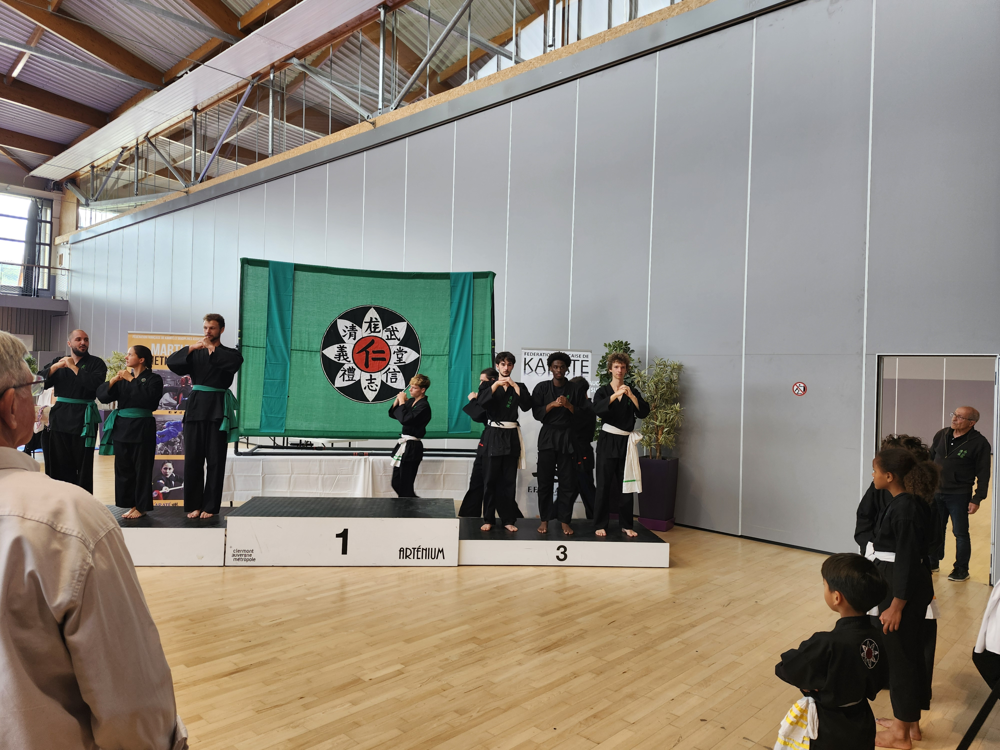
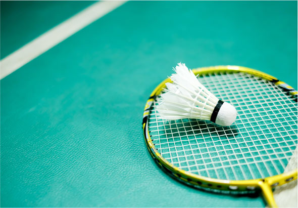
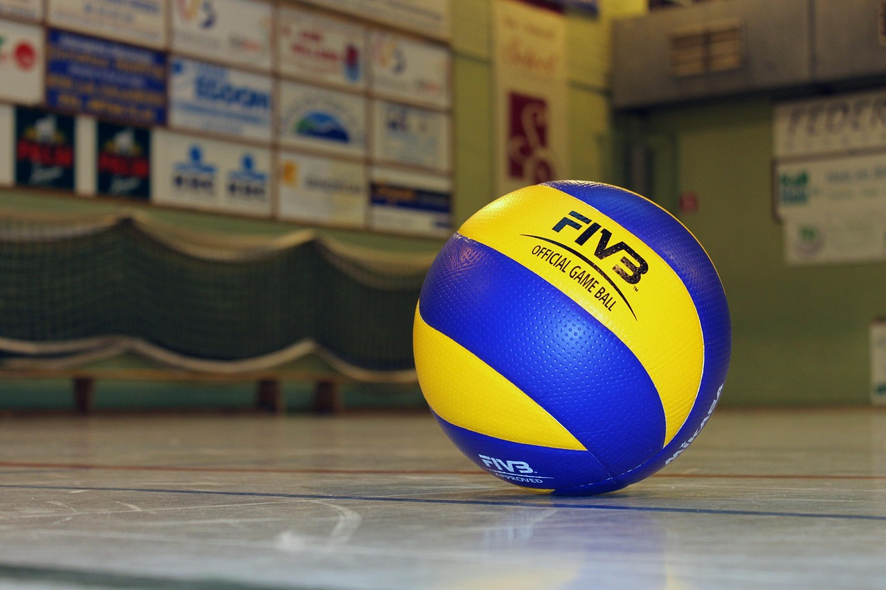
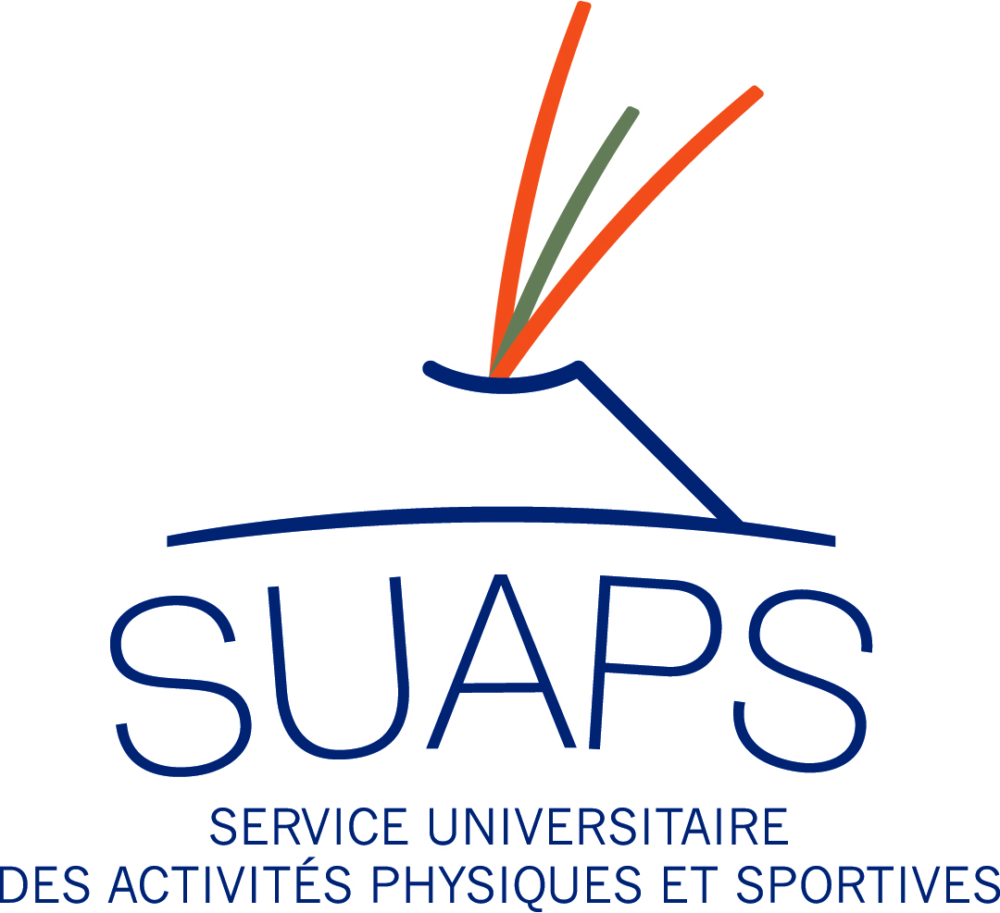

Je pratique un art martial depuis 3 ans en club, le viet vo dao. C'est un sport que je pratique au rythme de 2h par soir hors week-end et jeudi. Ce sport me plaît beaucoup, par le constant besoin de progresser afin de toujours chercher le mouvement parfait. Il me permet aussi de me calmer lorsque je suis stressé et j'aime tout ce que j'y apprends. Chaque fin d'année il y a une grosse compétition à laquelle je participe à différentes catégories, le combat, la technique, et la technique en synchronisation. Il y a 2 ans, j'ai obtenue la médaille de bronze dans chacune d'entre-elles, et je me suis entraîné de mon mieux pour en obtenir une d'argent ou d'or lors de la dernière compétition. Au final, mon entraînement a payé, j'ai obtenu une médaille de bronze en synchronisation mais dans une poule redoutable dont faisait parie la championne de France. Je suis content du résultat car d'après les juges, nous n'étions pas loin de remporter la victoire lors de notre élimination par les vainqueurs et je compte m'améliorer pour viser la prochaine fois la médaille d'or. Cependant, je n'ai malheureusement pas accompli mon objectif car j'ai eu deux médailles d'or mais dans des poules où il n'y avait personne d'autre que moi dans ma catégorie. Je compte donc redoubler d'effort lors de la prochaine compétition pour décrocher la médaille d'or.

Je pratique le badminton depuis la 6ème à l'UNSS et au SUAPS. J'en fais entre 1h30 et 4h par semaine. C'est un sport qui me plaît par la réactivité qu'il demande ainsi que l'utilisation importante des appuis . Il me permet de me défouler et la compétivité là-bas est quelque chose que j'apprécie.

Je pratique le volley depuis 1 an à hauteur de 3h par semaine. C'est un sport qui me plaît par son jeu d'équipe. Depuis le temps, notre équipe est très soudée et c'est quelque chose d'aggréable dans ce sport. De plus, je suis en constante progression et c'est quelque chose qui me motive grandement.

Je suis passioné par la pratique du sport depuis longtemps. Grâce au SUAPS et à l'UNSS, j'ai été capable de pratiquer énormément de sports sans avoir forcément à payer cher. Le sport permet de me dépenser ainsi que d'apprendre à me concentrer. Grâce à cela j'ai pu pratiquer énormément de sports différents tel que l'escalade, le basket, le volley, le badminton, le rugby, le tennis de table, et pleins d'autres sans avoir besoin de m'inscrire à des clubs.